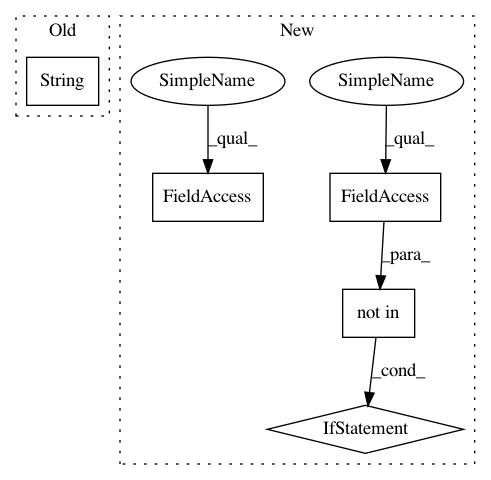

e49916888d5099061bd73dc5aa1e86afe93589f5,keras/engine/topology.py,Container,get_config,#Container#,2285
Before Change
for i in range(len(self.output_layers)):
layer = self.output_layers[i]
node_index = self.output_layers_node_indices[i]
node_key = layer.name + "_ib-" + str(node_index)
new_node_index = node_conversion_map[node_key]
tensor_index = self.output_layers_tensor_indices[i]
model_outputs.append([layer.name, new_node_index, tensor_index])
config["output_layers"] = model_outputs
After Change
node_index = self.input_layers_node_indices[i]
node_key = self._node_key(layer, node_index)
if node_key not in self.container_nodes:
continue
new_node_index = node_conversion_map[node_key]
tensor_index = self.input_layers_tensor_indices[i]
model_inputs.append([layer.name, new_node_index, tensor_index])
config["input_layers"] = model_inputs
model_outputs = []
for i in range(len(self.output_layers)):
layer = self.output_layers[i]
node_index = self.output_layers_node_indices[i]
node_key = self._node_key(layer, node_index)
if node_key not in self.container_nodes:
continue
new_node_index = node_conversion_map[node_key]
tensor_index = self.output_layers_tensor_indices[i]
In pattern: SUPERPATTERN
Frequency: 3
Non-data size: 5
Instances
Project Name: keras-team/keras
Commit Name: e49916888d5099061bd73dc5aa1e86afe93589f5
Time: 2017-08-15
Author: jorgecarleitao@gmail.com
File Name: keras/engine/topology.py
Class Name: Container
Method Name: get_config
Project Name: keras-team/keras
Commit Name: e49916888d5099061bd73dc5aa1e86afe93589f5
Time: 2017-08-15
Author: jorgecarleitao@gmail.com
File Name: keras/engine/topology.py
Class Name: Container
Method Name: get_config
Project Name: microsoft/nni
Commit Name: 5af01545fce906a682f44741b4f6b6bd2b1d2585
Time: 2019-05-15
Author: zhulifei@riseup.net
File Name: src/sdk/pynni/nni/hyperopt_tuner/hyperopt_tuner.py
Class Name:
Method Name: json2parameter
Project Name: microsoft/nni
Commit Name: 5af01545fce906a682f44741b4f6b6bd2b1d2585
Time: 2019-05-15
Author: zhulifei@riseup.net
File Name: src/sdk/pynni/nni/hyperopt_tuner/hyperopt_tuner.py
Class Name:
Method Name: json2space